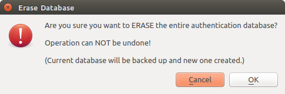

Authentication System Overview¶
Figure Authentication System 1
Anatomy of authentication system
Authentication database¶
The new authentication system stores authentication configurations in an SQLite database file located, by default, at:
<user home>\.qgis2\qgis-auth.db
This authentication database can be moved between QGIS installations without affecting other current QGIS user preferences, as it is completely separate from normal QGIS settings. A configuration ID (a random 7-character alphanumeric string) is generated when initially storing a configuration to the database. This represents the configuration, thereby allowing the ID to be stored in plain text application components, (such as project, plugin, or settings files) without disclosure of its associated credentials.
Note
The parent directory of the qgis-auth.db can be set using the following environment variable, QGIS_AUTH_DB_DIR_PATH, or set on the command line during launch with the --authdbdirectory option.
Master password¶
To store or access sensitive information within the database, a user must define a master password. A new master password is requested and verified when initially storing any encrypted data to the database. Only when sensitive information is accessed is the user prompted for the master password, which is then cached for the remainder of the session (until application is quit), unless the user manually chooses an action to clear its cached value. Some instances of using the authentication system do not require input of the master password, such as when selecting an existing authentication configuration, or applying a configuration to a server configuration (such as when adding a WMS layer).
Figure Master password 1
Input new master password
Note
A path to a file containing the master password can be set using the following environment variable, QGIS_AUTH_PASSWORD_FILE.
Managing the master password¶
Once set, the master password can be reset; the current master password will be needed prior to resetting. During this process, there is an option to generate a complete backup of the current database.
Figure Master password 2
Resetting master password
If the user forgets the master password, there is no way to retrieve or override it. There is also no means of retrieving encrypted information without knowing the master password.
If a user inputs their existing password incorrectly three times, the dialog will offer to erase the database.
Figure Master password 3
Password prompt after three invalid attempts
Authentication Configurations¶
You can manage authentication configurations from Configurations in the Authentication tab of the QGIS Options dialog (Settings ‣ Options).
Figure Configuration editor 1
Configurations editor
Use the  button to add a new configuration, the
button to add a new configuration, the  button
to remove configurations, and the
button
to remove configurations, and the  button to modify existing ones.
button to modify existing ones.
Figure Configuration editor 2
Adding config from within Configuration editor
The same type of operations for authentication configuration management (Add, Edit and Remove) can be done when configuring a given service connection, such as configuring an OWS service connection. For that, there are action buttons within the configuration selector for fully managing configurations found within the authentication database. In this case, there is no need to go to the configurations in Authentication tab of QGIS options unless you need to do more comprehensive configuration management.
Figure Configuration editor 3
WMS connection dialog showing [Add], [Edit], and [Remove] authentication configuration buttons
When creating or editing an authentication configuration, the info required is a name, an authentication method and any other info that the authentication method requires (see more about the available authentication types in Authentication Methods).
Authentication Methods¶
Available authentications are provided by C++ plugins much in the same way data
provider plugins are supported by QGIS. The method of authentication that can
be selected is relative to the access needed for the resource/provider, e.g.
HTTP(S) or database, and whether there is support in both QGIS code and a
plugin. As such, some authentication method plugins may not be applicable
everywhere an authentication configuration selector is shown. A list of
available authentication method plugins and their compatible resource/providers
can be accessed going to Settings – > Option and, in the
Authentication tab, click the  Installed plugins
button.
Installed plugins
button.
Figure Authentication methods 1
Available method plugins list
Plugins can be created for new authentication methods that do not require QGIS to be recompiled. Since the support for plugins is currently (since QGIS 2.12) C++-only, QGIS will need to be restarted for the new dropped-in plugin to become available to the user. Ensure your plugin is compiled against the same target version of QGIS if you intend to add it to an existing target install.
Figure Authentication methods 2
Basic HTTP authentication configs
Figure Authentication methods 3
PKI paths authentication configs
Figure Authentication methods 4
PKI PKCS#12 file paths authentication configs
Figure Authentication methods 5
Stored Identity authentication configs
Note
The Resource URL is currently an unimplemented feature that will eventually allow a particular configuration to be auto-chosen when connecting to resources at a given URL.
Master Password and Auth Config Utilities¶
Under the Options menu (Settings ‣ Options) in the Authentication tab, there are several utility actions to manage the authentication database and configurations:
Figure configuration utilities 1
Utilities menu
Input master password — Opens the master password input dialog, independent of performing any auth db command. Clear cached master password—Unsets the master password if it has been set via input dialog. Reset master password—Opens a dialog to change the master password (the current password must be known) and optionally back up the current database.
Clear cached authentication configurations — Clears the internal lookup cache for configurations used to speed up network connections. This does not clear QGIS’s core network access manager’s cache, which requires a relaunch of QGIS.
Reset master password - Replaces the current master password for a new one. The current master password will be needed prior to resetting and a backup of database can be done.
Remove all authentication configurations — Clears the database of all configuration records, without removing other stored records.
Erase authentication database — Schedules a backup of the current database and complete rebuild of the database table structure. These actions are scheduled for a later time, so as to ensure other operations like project loading do not interrupt the operation or cause errors due to a temporarily missing database.
Figure configuration utilities 2
DB erase verification menu
Using authentication configurations¶
Typically, an authentication configuration is selected in a configuration dialog for a network services (such as WMS). However, the selector widget can be embedded anywhere authentication is needed or in non-core functionality, like in third-party PyQGIS or C++ plugins.
When using the selector, No authentication is displayed in the pop-up menu control when nothing is selected, when there are no configurations to choose from, or when a previously assigned configuration can no longer be found in the database. The Type and Id fields are read-only and provide a description of the authentication method and the config’s ID respectively.
Figure Authentication configurations 1
Auth config selector with no autentication
Figure Authentication configurations 2
Auth config selector with config selected
Python bindings¶
All classes and public functions have sip bindings, except QgsAuthCrypto, since management of the master password hashing and auth database encryption should be handled by the main app, and not via Python. See Security Considerations concerning Python access.